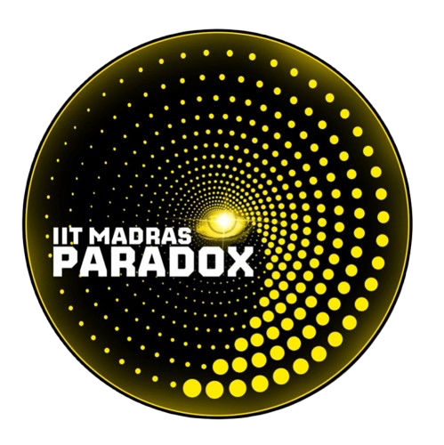
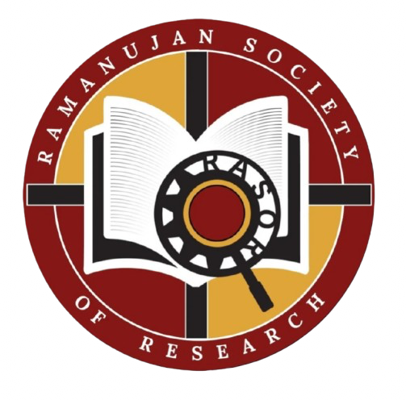

Sponsorship Brochure · Paradox 2026
Research: To Infinity and Beyond
Ramanujan Society of Research · IIT Madras
Invitation to Partner & Support


Ramanujan Society of Research · IIT Madras
Paradox is the annual techno-cultural-sports festival of the IIT Madras BS & ES Degree Programs — the world's first Bachelor of Science Degree in Data Science & Programming offered online. With over 36,000 enrolled students spanning ages 17 to 81, from every corner of India and beyond, the programs represent a landmark in democratising quality higher education.
Paradox is what sets this program apart from every other online degree. It is an on-campus, in-person celebration that physically unites this vast virtual community for five exhilarating days on the lush 620-acre IIT Madras campus in Chennai. Last year, over 5,000 students converged on campus — a testament to the depth of community spirit and the scale of engagement that no other online program can claim.
Paradox 2026 promises to be bigger, bolder, and more impactful — a unique opportunity for any organisation to connect meaningfully with one of the country's most intellectually driven student communities.
The IIT Madras BS & ES community is exceptionally diverse: working professionals upskilling mid-career, fresh graduates, and school leavers pursuing their first degree — all bound by intellectual curiosity and drive. This is not a passive audience. These are students who have chosen one of India's most rigorous academic programmes, balancing demanding coursework with professional and personal responsibilities.
Engaging with this audience at Paradox means reaching motivated, analytically capable individuals who are active decision-makers — in their careers, in their organisations, and in their communities. They represent the emerging talent pool in data science, AI, programming, electronics, and adjacent fields.
Research: To Infinity and Beyond is a research-oriented technical event conducted under Paradox 2026, the annual fest of the IIT Madras BS & ES Degree Programs. Organized by the Ramanujan Society of Research, the event is designed to foster innovation, analytical thinking, and real-world problem solving within the IITM Online Degree ecosystem.
The event brings together students from diverse technical backgrounds to engage in experimental exploration, technical presentations, academic discussions, and research-driven collaboration across domains such as Artificial Intelligence, Data Science, and Electronics.
Through structured challenges, workshops, and presentation-driven evaluation, the event aims to encourage students to approach problems with curiosity, scientific thinking, and practical innovation — creating an environment that reflects the spirit of modern research and emerging technology.
Participants engage in hands-on problem solving, experimental thinking, and research-based workflows designed to simulate real academic and technical environments.
Conducted within the IIT Madras Online Degree ecosystem, the event brings together ambitious learners, developers, researchers, and innovators from across the country through a technology-driven academic platform.
Engage directly with motivated, analytically capable students from one of India's most respected academic institutions — your next generation of collaborators and hires.
Participants are deeply invested in AI, Data Science, and Electronics. This is an ideal setting to engage communities aligned with innovation, R&D, and technology.
Students come from every state in India, across age groups and professional backgrounds — a genuinely cross-sectional, high-intent audience under one roof.
Align your organisation with India's #1 ranked institute (NIRF 2025), reinforcing credibility among a discerning, academically rigorous community.
The Ramanujan Society of Research (RaSoR) is the dedicated research society of the IIT Madras BS & ES Degree Programs. Named after the legendary mathematician Srinivasa Ramanujan — a symbol of brilliance born beyond traditional academic boundaries — the society reflects the spirit of its parent program: rigorous, inclusive, and forward-looking.
RaSoR exists to cultivate a genuine research culture among students of the online degree program, guiding them from curiosity to publication-quality work. The society organises events, workshops, and mentored research experiences that mirror professional academic standards, led entirely by students for students.
Research: To Infinity and Beyond is the society's flagship event under Paradox — a competitive platform that challenges participants to experience the full arc of research: ideation, documentation, peer review, and expert presentation.
Indian Institute of Technology Madras (IIT Madras) is India's premier technical university, consistently ranked #1 by the National Institutional Ranking Framework (NIRF). Spread across a 620-acre campus in Chennai, IIT Madras is globally recognised for research excellence, academic rigour, and innovation. Its pioneering online BS Degree Programs — in Data Science & Applications and Electronic Systems — have democratised access to world-class education with over 36,000 enrolled students from across the country.
We welcome organisations of all kinds to be a part of this exceptional event. Please reach out to discuss how we can create a meaningful partnership for Paradox 2026.